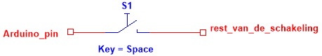
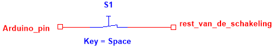
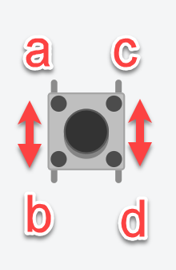
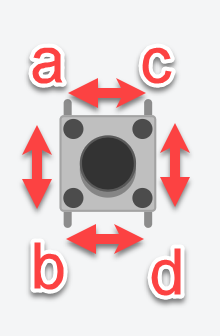
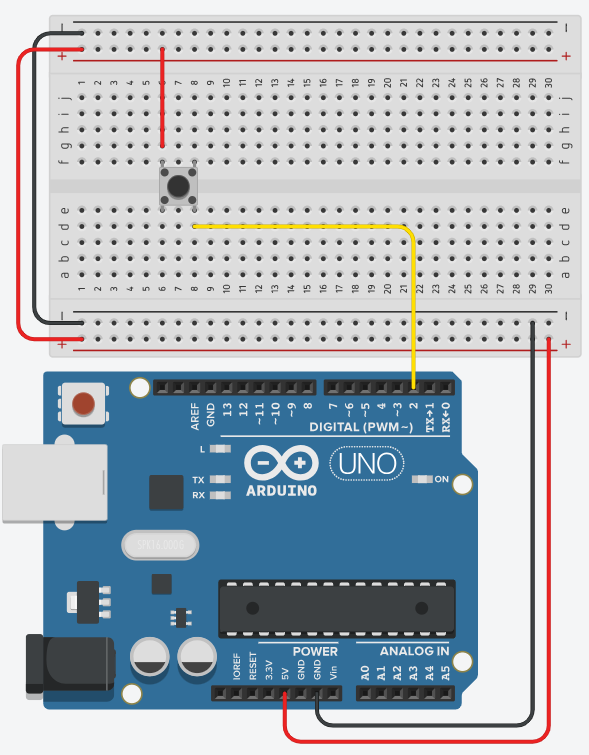
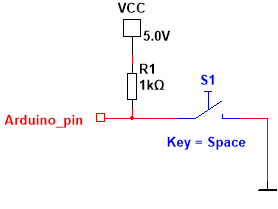
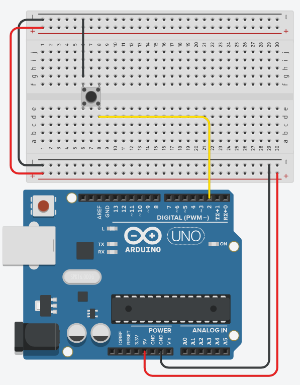
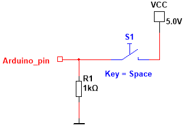

Pull up en pull down weerstanden
Een knop die je op een ingang aansluit, heeft een pull-up- of een pull-downweerstand nodig om die ingang in rust een vaste waarde te geven. Deze pagina gaat dieper in op het uitlezen van knoppen.
Wat is een knop?


Een knop is niets anders dan een verbinding die je maakt of verbreekt. Knoppen komen dan ook in twee versies voor: de NO en de NC. Deze letterwoorden staan voor "normally open" en "normally closed" en geven aan wat de rusttoestand van de knop is.
Bij een NO is de verbinding standaard verbroken (open) en zorgt het drukken op de knop voor het leggen van de verbinding, terwijl bij een NC de verbinding standaard gelegd is en het drukken op de knop de verbinding verbreekt.
Pushbutton
Een gewone schakelaar is bistabiel. Dit wil zeggen dat de status behouden blijft. In je projecten gebruik je echter heel vaak een pushbutton. Deze eenvoudige knop gedraagt zich zoals beschreven in de tabel.
| Niet ingedrukt | Wel ingedrukt |
 |
 |
|
a is verbonden met b maar niet met c of d c is verbonden met d maar niet met a of b |
a, b, c en d zijn met elkaar verbonden |
Normally open
Er bestaan dus knoppen die in rust "normally open" zijn en waarbij de verbinding standaard onderbroken is. Wanneer je deze knop bekrachtigt, maak je de verbinding. Belangrijk hierbij is om te beseffen dat er, wanneer de knop in rust is, geen verbinding is. Wanneer je zo'n knop verbindt met een ingangspin van de Arduino, hangt er aan de ingang van de Arduino een stuk draad dat met niks verbonden is.

Het probleem is dat zo'n stuk losse draad (in dit geval de gele draad) zich als een antenne gedraagt en alle soorten elektromagnetische storingen uit de omgeving kan oppikken, waardoor de ingang willekeurig een hoog of een laag signaal oppikt.
Een oplossing is om op de ingang te zorgen voor een standaardwaarde. Dit kan ook weer op twee manieren. Je kan een pull-up- of een pull-downweerstand gebruiken. Daarbij verbind je de ingang via een grote weerstand met massa (pull-down, dus trek de ingang omlaag naar 0 V) of met de voedingsspanning Vcc (pull-up, trek de ingang omhoog naar +5 V).
Pull-up
Wanneer je een weerstand van een redelijk grote waarde (meestal 1 kΩ, kan ook 10 kΩ zijn) plaatst tussen +5 V en de ingang, dan zal deze ingang altijd een 1 lezen wanneer er verder niks aan verbonden is.

Als je aan deze ingang ook nog een NO-knop hangt, heeft die in rust geen invloed en blijf je een 1 lezen. Als je de andere kant van de knop verbindt met de massa, dan zal het indrukken van de knop ervoor zorgen dat de ingang nu rechtstreeks verbonden is met de massa, waardoor je op de ingang een 0 gaat lezen.

Een pull-upweerstand kan dus hardwarematig aan de schakeling worden toegevoegd, maar bij de Arduino kan deze ook softwarematig geïmplementeerd worden.
Bij het definiëren van de pin als ingang kan je namelijk naast INPUT ook kiezen voor INPUT_PULLUP. Wanneer je INPUT_PULLUP kiest, zal bij de Arduino intern een pull-upweerstand ingeschakeld worden, zodat je die extern niet meer moet voorzien.

INPUT_PULLUP is de eenvoudigste oplossingDe INPUT_PULLUP-configuratie is de meest gebruikte en eenvoudigste oplossing, omdat je geen externe weerstand meer hoeft te voorzien.
Pull-down
Je kan ook een pull-downweerstand voorzien. Daarbij wordt tussen de ingang en massa een weerstand geplaatst van dezelfde grootteorde als bij een pull-up. In rust en met een NO-knop staat op de ingang dan een 0, aangezien de ingang verbonden is met de massa.

Om een 1 op de ingang te krijgen, moet je de andere kant van de NO-knop verbinden met +5 V, zodat bij het indrukken van de knop de ingang rechtstreeks verbonden wordt met +5 V en de 1 op de ingang komt.
Het is niet mogelijk om een ingebouwde pull-downweerstand in te stellen via de pinMode()-instructie. Dat lukt enkel bij een pull-up.
Normally closed
De tegenhanger van de normally-openschakelaar is de normally-closedversie. Dit type schakelaar wordt minder frequent gebruikt en verschilt enkel van de normally-openversie in het feit dat de rusttoestand en de bekrachtigde toestand gewisseld zijn.
Zo kan je bijvoorbeeld een noodstopknop realiseren door in serie met de voeding een normally-closedschakelaar op te nemen. Dit moet dan wel een versie met vergrendeling zijn, zodat de schakelaar na het verbreken van de voeding in open positie blijft.